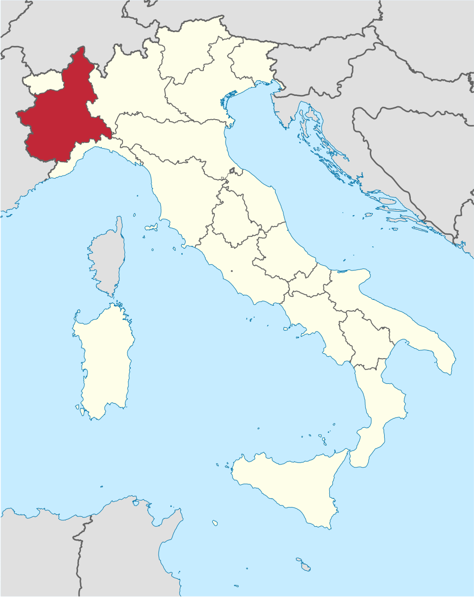
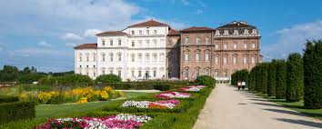
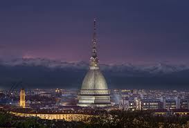
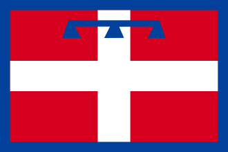
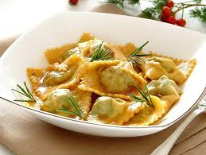
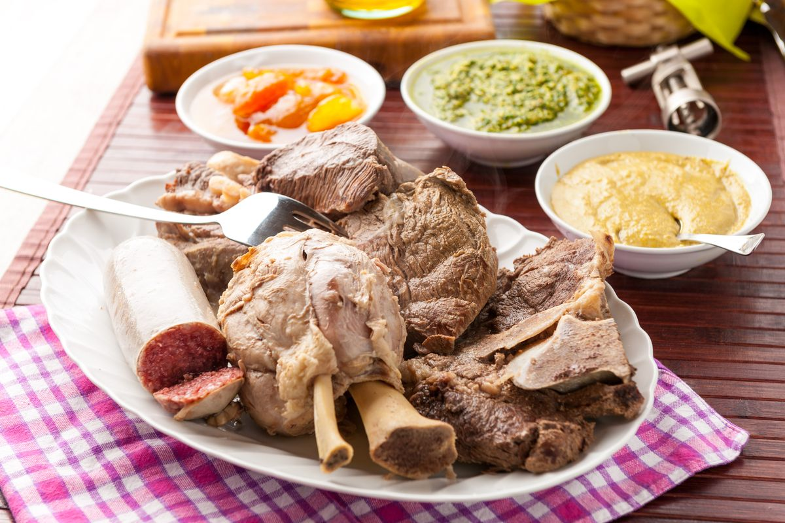
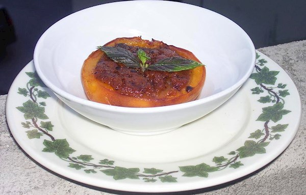
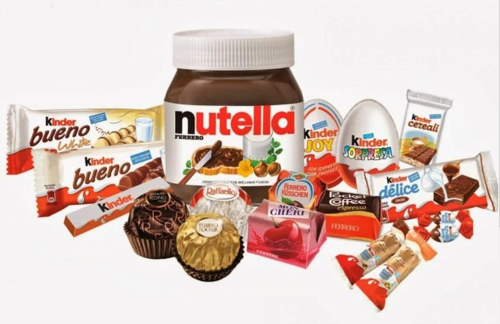
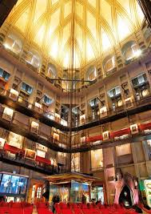

Northwestern Italy, bordering France and Switzerland
Turin (Torino)
Alpine mountains, rolling hills, vineyards, and fertile plains
Italian, Piedmontese, and Occitan minority languages
Agnolotti, Gianduja chocolate, and the home of the Ferrero company (Ferrero Rocher, Nutella, Kinder)
Fiat, Baroque architecture, Eiffel 65, and the House of Savoy

Piedmont is located in Northern Italy (Italia Settentrionale) or more specifically, the northwestern part of Italy. It is bordered by France (west), Switzerland and the Aosta Valley (north), Lombardy (east), and Liguria (south).
Significance of the name: The term "piedmont' means "at the foot of the mountain" ("piede" meaning foot; "monte" meaning mountain).
The region is divided into 8 provinces: Alessandria, Asti, Biella, Cuneo, Novara, Torino (Turin), Verbano-Cusio-Ossola and Vercelli
Capital (and largest city): Turin (Torino)
During the winter, temperatures are around 2°C (35°F) and it is one of the snowiest regions of Italy.
During the spring, the weather is pleasant but rainy, with May being the wettest month.
During the summer, on average, temperatures go to 22°C (72°F).
During the autumn months, there is a gradual drop from 16°C (61°F) in September to 6°C (43°F) in November.
About 40% of the region is mountainous. The rest is made up of hills and plains, with rivers flowing into the Po Valley. The Apennine Mountains begin in the southeast.
The region was first inhabited by the Celts and the Ticino rivers. They were succeeded by the Ligurians and the Celtic descendants, including the Taurins.
By the 1st century BCE, the region caught the attention of the Romans. They used it to control the Alpine passes of Valle D’Aosta, which was a key access point to Gaul (present-day France, Belgium, Luxembourg and parts of Switzerland). In 28 BC, Julius Caesar ordered the city of Julia Augusta Taurinorum, which is now present-day Torino to be built.
After the fall of the Roman Empire, in the 5th century, Piedmont was controlled by the Germanic people who settled in the area, before joining the Carolingian Empire in the 8th century. In the 11th century, the region was subdivided into the Marquisate of Monferrato, which ended when the House of Savoy took over in the 14th century, gaining influence via the Alpine passes.
In 1706, following the Siege of Turin against the French, Victor Amadeus II was crowned King of the Kingdom of Sardegna, which at the time, Piedmont was included. This was a prosperous period for the Turin court. After a brief period of Napoleonic rule, in 1814, Victor Emmanuel I regained control of the kingdom and began unifying the region with the rest of Italy, which ended on March 17th, 1861.
As of 2026, the total population is 4.2 million people.
The region covers an area of 25,400 km², making it the second largest area after Siciliy (Sicilia). In addition, it has a a population density of about 167 people per km².
Turin (Torino) is the capital of Piedmont and one of Italy’s most historically important cities. Once the capital of the Kingdom of Italy, Turin is known for its elegant architecture, royal palaces, and cultural institutions, including the Mole Antonelliana, home of the National Cinema Museum. The city is also famous as the birthplace of Fiat, its long tradition of automotive innovation, and its role in Italian chocolate culture, especially through gianduja.
Population: 855,654 people
Novara is a historic city in eastern Piedmont known for its beautiful architecture, agricultural traditions, and strategic location between Turin and Milan. The city is famous for the impressive Basilica of San Gaudenzio, whose towering dome dominates the skyline and was designed by architect Alessandro Antonelli. Surrounded by rice fields, Novara is also an important center for the production of risotto and rice cultivation in northern Italy.
Population: 103,238 people
Alessandria is a city in southern Piedmont founded in the 12th century as a military stronghold against the powerful forces of the Holy Roman Empire. Named after Pope Alexander III, the city has long been an important crossroads between northern Italy and the Mediterranean. Alessandria is known for its historic citadel, elegant squares, and its connection to the famous Borsalino hat, which originated here in the 19th century.
Population: 93,409 people
Known internationally for its wines, particularly the famous sparkling wine Asti Spumante. The city has a rich history as an important medieval trading center and still preserves many historic towers, churches, and palaces. Every year, Asti hosts the Palio di Asti, one of Italy’s oldest horse races, celebrating the city’s medieval traditions and culture.
Population: 73,604 people
Piedmont is internationally famous for landmarks spanning royal palaces, sacred mountaintops, and historic wine cellars. The region’s standout architectural and historical treasures are shaped by its legacy as the cradle of the House of Savoy and the birthplace of unified Italy.

The Reggia di Venaria Reale (Palace of Venaria) is a grand 17th-century former royal residence and gardens located in Venaria Reale, about 14 kilometers northwest of Torino, Italy. Often dubbed the "Versailles of Italy," it is one of the largest and most spectacular Baroque architectural complexes in the world.

The Mole Antonelliana is the iconic architectural landmark of Torino, Italy. Designed by Alessandro Antonelli in 1863, it is the world's tallest unreinforced brick building (167.5 meters / 550 feet) and currently houses the spectacular National Museum of Cinema.

The flag of Piedmont has a red background with a central white cross. This cross is overlaid with a light blue label (a heraldic ribbon with pendants) at the top, and the entire flag is bordered by a thin white stripe and a wider blue border.
The current flag was adopted on 24 November 1995.
The Piedmont flag is essentially the arms of the Prince of Piedmont, the title for the eldest son of the King of Sardinia. When Duke Amadeus VIII of Savoy gave his eldest surviving son the title of "Prince of Piedmont" in 1424, he added a heraldic label to the coat of arms distinguish it from the general coat of arms of the House of Savoy.
The flag symbolizes the region's deep historical ties to the House of Savoy and the Italian unification movement.
Italian is the official language of the region, functioning as the primary language for education, business, and media. However, the region features a rich diversity of regional and minority languages.
Example: L'Italia è un paese in Europa. Translation: Italy is a country in Europe.
A distinct language from Italian and is spoken by locals. This language is more related to French, Occitan and Catalan than standard Italian
Example: L'Italia a l'é un pais d'Euròpa. Translation: Italy is a country in Europe.
Because of its proximity to France, some areas in the region speak French.
Example: L'Italie est un pays en Europe. Translation: Italy is a country in Europe.
Occitan is a recognized minority language in the Piedmont region of northwestern Italy, spoken by an estimated 20,000 to 40,000 people. Often called lenga d'òc, this Romance language flourishes in 14 alpine valleys stretching across the provinces of Cuneo and Torino.
Example: Itàlia es un país d'Euròpa. Translation: Italy is a country in Europe.
Piedmont (Piemonte) is a globally celebrated gastronomic powerhouse. It is particularly famous for its legendary Alba white truffles, premium Fassona beef, world-class hazelnuts, rich dairy used in its famous cheeses, and as the birthplace of the Slow Food movement

Agnolotti, also known as agnolotti piemontesi, is a type of stuffed pasta typical of the Piedmont region of Italy, made with small pieces of flattened dough folded over a filling of roasted meat or vegetables.

A decadent Northern Italian winter stew. It features an elaborate assortment of various beef and veal cuts, offal, a whole hen, and cotechino (a spiced pork sausage). Simmered for hours in aromatic broth, it is served hot with savory sauces and vegetable sides

Pesche al forno is a traditional dessert that's especially popular in Piedmont. It's usually made with a combination of large peaches, butter, crumbled amaretti, sugar, almonds, Marsala, and dark chocolate. The peaches are cut in half and half of the flesh is scooped out into a bowl.

Alba was named a United Nations city of creative gastronomy in 2017. It is known around the world for its hazelnuts, wine and iconic white truffle. In addition, the Ferrero company originated in 1946 as a small family pastry shop in Alba, and it serves as the historic and geographic heart of the company where iconic brands like Nutella, Ferrero Rocher, and the Kinder line were born and continue to be produced on a massive scale.

Piedmont is known for its strong cultural connection to cinema, especially in Turin, which is considered one of the birthplaces of Italian film. The city is home to the National Museum of Cinema, located inside the iconic Mole Antonelliana, and has a long tradition of film production and festivals. This makes Piedmont an important center for Italian cinema and visual storytelling.
Eiffel 65 is an Italian Eurodance group formed in Turin, Piedmont, in the late 1990s. They became internationally famous with their 1999 hit Blue (Da Ba Dee), which topped charts around the world and made them one of the most recognizable dance acts of their era. Their music is known for catchy electronic melodies and defining the late-90s Eurodance sound.
Want to learn more about Piedmont? Watch this video to explore its landscapes, history, culture, and traditions.
Watch the video →